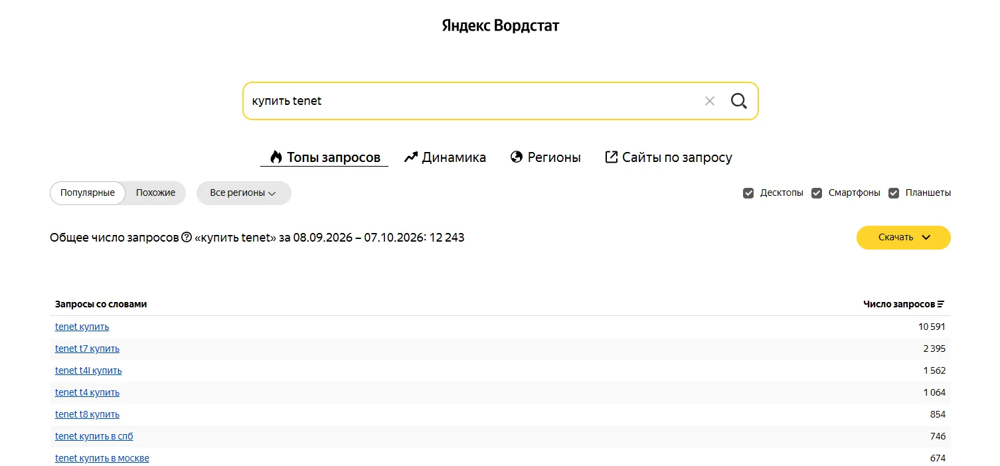
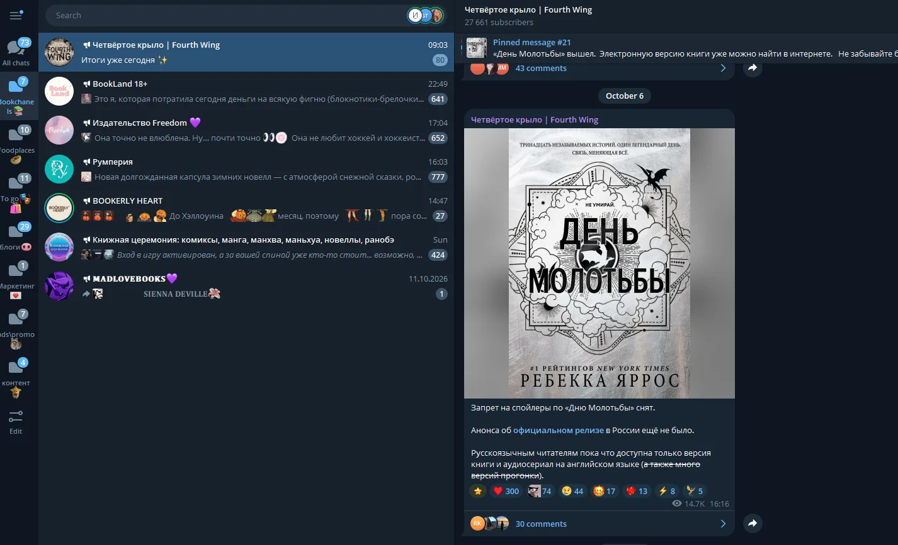
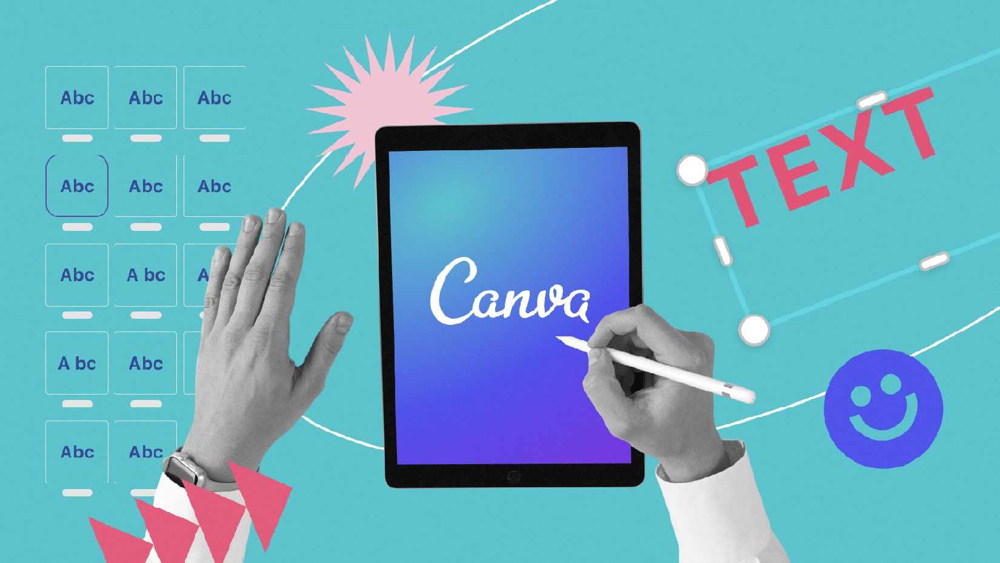

Чем на самом деле пользуется маркетолог
Вордстат, таблицы, папки в телеге и бумажный блокнот. Рассказываю про свой ежедневный стек, лайфхаки и неосуществленные мечты о Figma и Miro.
Вордстат, таблицы, папки в телеге и бумажный блокнот. Рассказываю про свой ежедневный стек, лайфхаки и неосуществленные мечты о Figma и Miro.
Если честно, я с подозрением отношусь к подборкам в духе «Топ-100 инструментов маркетолога, которые изменят твою жизнь». Потому что на деле мы все пользуемся пятью-шестью сервисами, а остальные висят в закладках «на потом», молча собирают пыль и тратят ваши денежки на подписку :)
Я не буду рассказывать про экзотические нейросети, которые сами пишут стратегии на миллион (иначе я бы уже тут не работала). Расскажу про свой рабочий стек. Чем реально пользуюсь каждый день — в аналитике, планировании и работе. С лайфхаками и скриншотами (как и обещала).
Каждый маркетолог хочет быть креативным, но если ты не видишь цифры, твоя креативность ничего не стоит.
Вордстат. База для понимания спроса. Смотрю, что и как ищут люди, прежде чем запускать рекламу или писать тексты. А еще это мой главный аргумент, когда нужно доказать что-то отделу продаж или дилеру. Приходишь с сухими цифрами частотности — и вопросы «а мне кажется, это не сработает» отпадают сами собой.
Google Sheets. Да, это не специализированный сервис, но 99% моей аналитики живет в гугл-таблицах и опросах. Свести данные из трех источников, посчитать CPL или CPO вручную, собрать контент-план — все там.
Excel. Как ни странно, да! Умеешь делать сводные таблицы и знаешь формулы — маркетолог из тебя уже получился. Иногда старый добрый Excel работает быстрее и надежнее любых модных дашбордов.

📷 Скриншот таблицы или ВордстатаРабота маркетолога — это когда у тебя одновременно 15 задач, 3 дедлайна и «срочно поменяй кнопку». Без системы тут можно сойти с ума.
Telegram (Папки). Мой самый недооцененный инструмент планирования. У меня есть отдельные папки: «Работа» (только подрядчики и коллеги), «Инфополе» (каналы, которые читаю по работе), «Личное» и еще миллион папок. Иначе рабочий чат утонет в мемах из чайных каналов.
Блокнот. Звучит как прошлый век, но это святое. Быстро записать мысль на созвоне, нарисовать схему воронки, пока едешь в метро. Плюс бумага не разрядится в самый неподходящий момент.
Заметки на телефоне. Для внезапных инсайтов. Увидела крутой заголовок в метро, придумала идею для поста, пока пила чай — сразу в заметки. Потом это все уходит в работу или перекочевывает в бумажный блокнот.

📷 Скриншот структуры папок в ТГТут главное — не изобретать велосипед и не терять людей в переписках.
Canva. Мой спаситель, когда нужно быстро собрать презентацию, накидать простенький макет для соцсетей или сделать визуал для креаторов. Дизайнер занят, а нам «надо вчера» — открываем Канву.
Google Docs + комментарии. Все ТЗ для креаторов — только там. Никаких голосовых в телеге, которые потом невозможно найти. В гуглдоке пишу бриф, отправляю на комментирование. Редактура в режиме реального времени — это спасает от кучи правок.
Яндекс.Телемост и Zoom. На постоянке для созвонов с командой и подрядчиками. Иногда кажется, что мы там живем. Классика жанра: пока дизайнер занят в Канве, мы всей командой ищем на созвоне файл с ТЗ.
AI world: GPT, Gemini. Куда без друзей! Не для того, чтобы они писали за меня тексты (тут я сама), а для генерации идей, поиска структуры, быстрых переводов и чтобы объяснить сложное простыми словами. Отличные ассистенты для рутины.

📷 Скриншот из CanvaЕсть инструменты, про которые я регулярно читаю, сохраняю себе ссылки, но в ежедневную рутину они пока так и не зашли. Но я верю, что всё впереди.
Notion. Моя мечта. Хотелось бы, но пока нет — хотя даже статьи для этого сайта я делала под впечатлением от его структуры и логики. Когда-нибудь точно перееду туда.
Figma. Хотелось бы, но нет. Пока собираю мудборды там, где получается, но чувствую, что однажды мы с ней подружимся.
Miro. Активно использовала его во время учебы, сейчас присматриваюсь к нему или к аналогам, которые работают в России. Очень не хватает доски для брейнштормов и визуализации всех этих маркетинговых схем!
Заведите себе правило одного таба. Если во время работы у вас открыто больше 20 вкладок в браузере — вы не работаете, вы просто переключаете внимание. Мое строгое правило: открыты только нужные вкладки! Я закрываю все, что не нужно прямо сейчас. Это не инструмент, но работает лучше любого таск-трекера.
В маркетинге нет волшебной кнопки. Есть базовые инструменты, которые вы настроили под себя, и умение ими пользоваться. Не гонитесь за 100 сервисами из подборок. Возьмите пять, доведите до автоматизма — и будет вам счастье. И это не только про маркетологов.